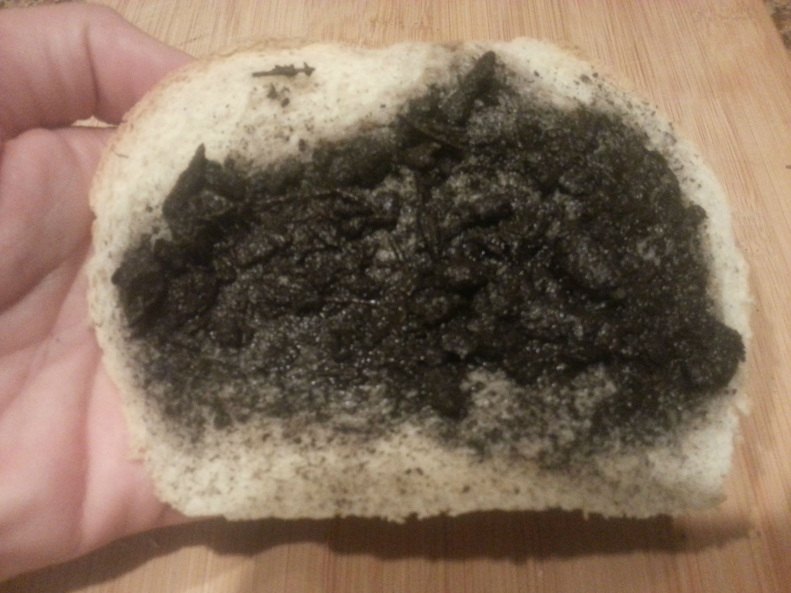

Dirt Sandwich Two

Description
Look, I don't really want to make another recipe. Here's the dirt sandwich one again.
Ingredients
- 2 Slices Bread
- 1 Cup of Dirt
- Lettuce
- Onion
- 1 Glass Whole Milk
Steps
- Lay our pieces of bread out on a flat surface
- Carefully spoon dirt onto one piece of bread to desired thickness. Go as heavy or light as you like!
- Put lettuce in garbage.
- Put onion on belt.
- Put the last piece of bread on top of the dirt. Dirt sandwich!
Shove it down your gullet!